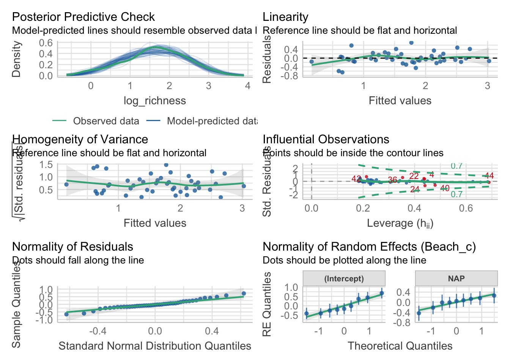
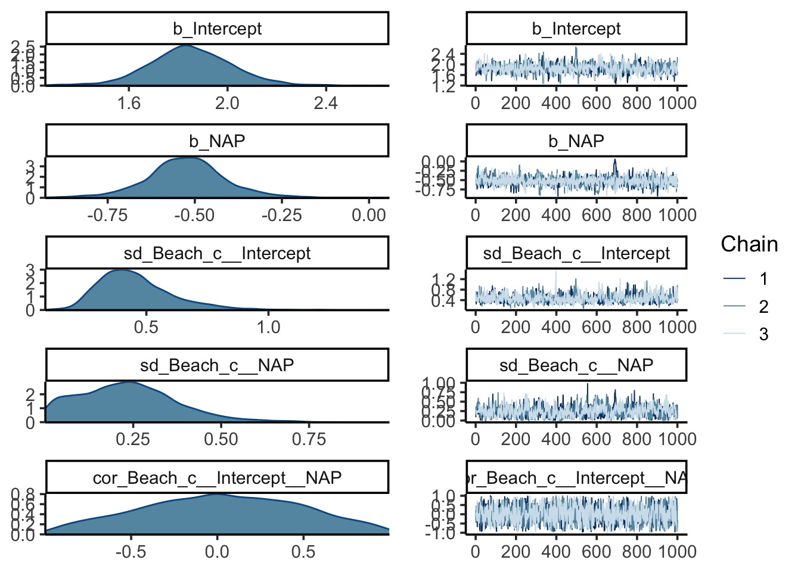
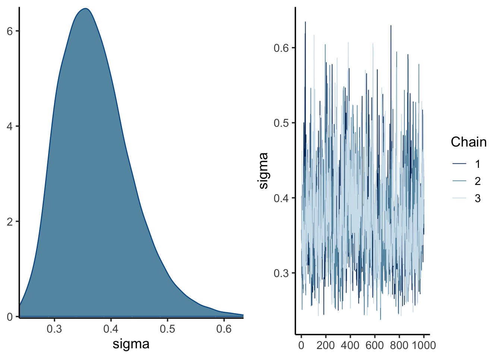
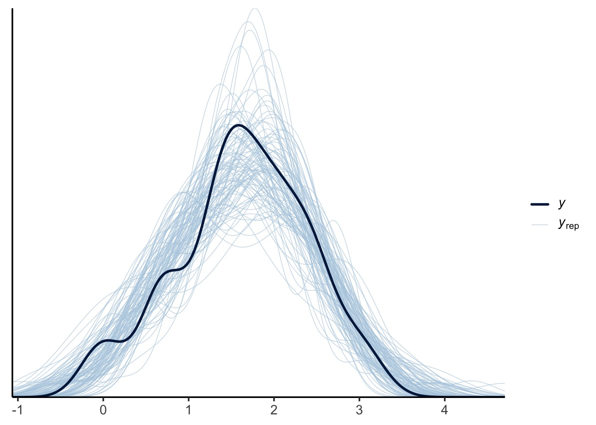
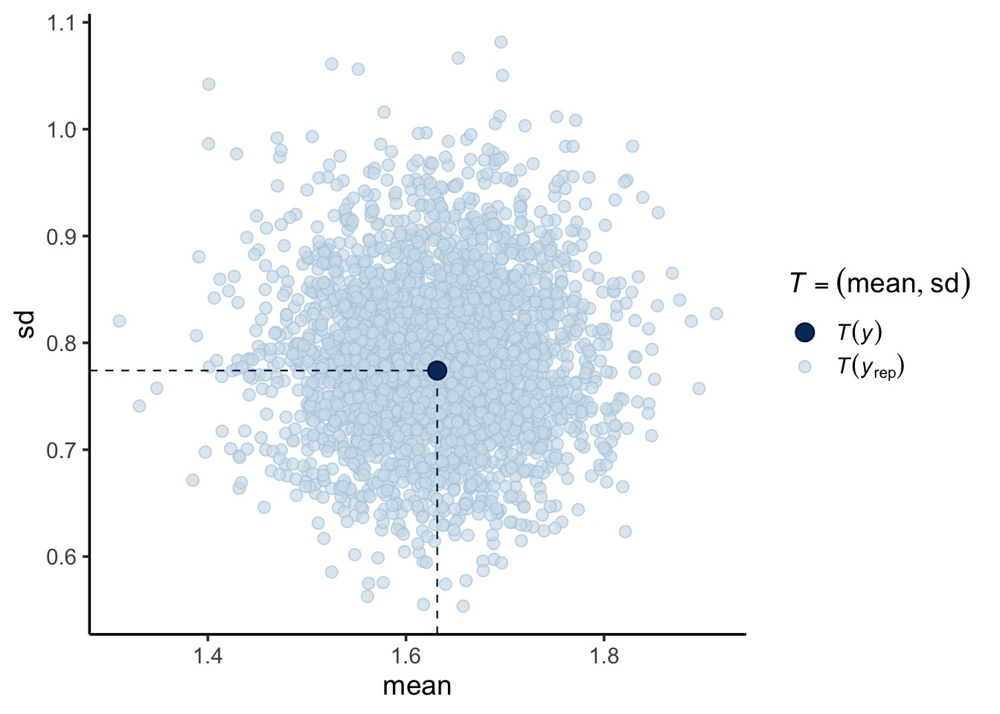
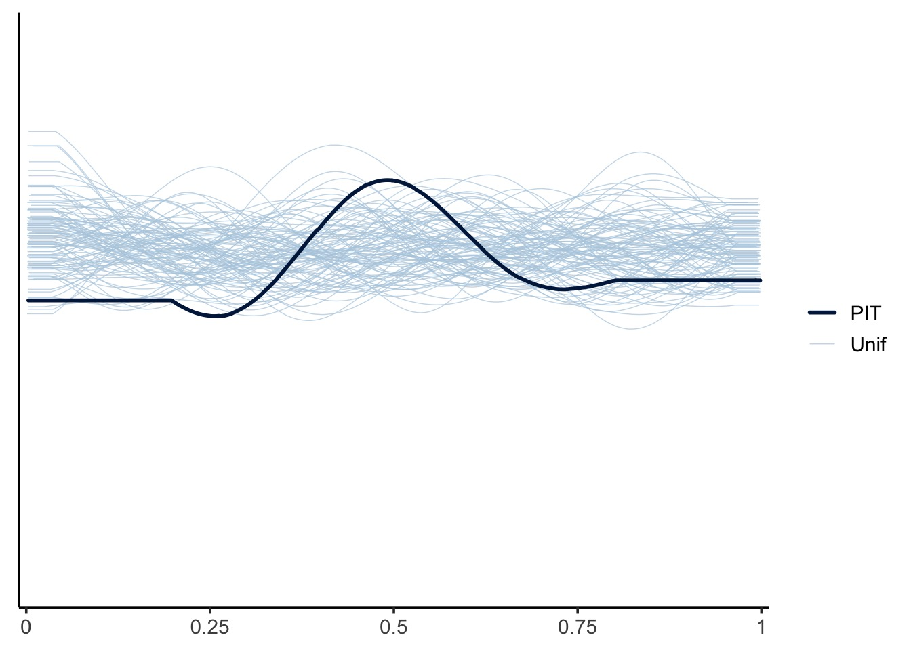
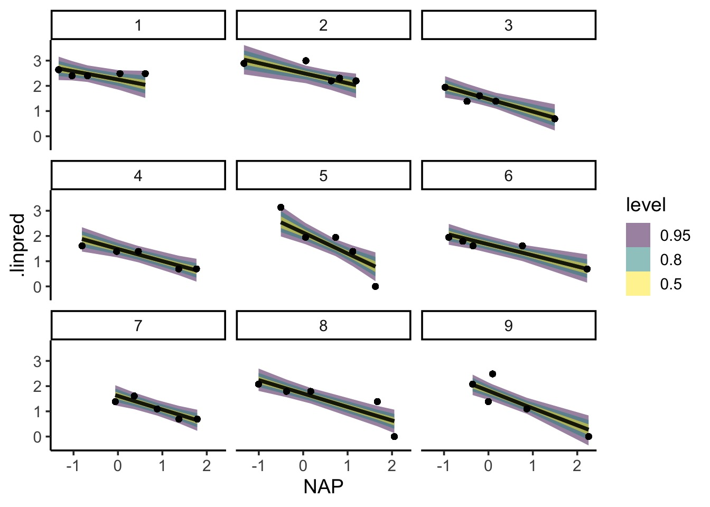
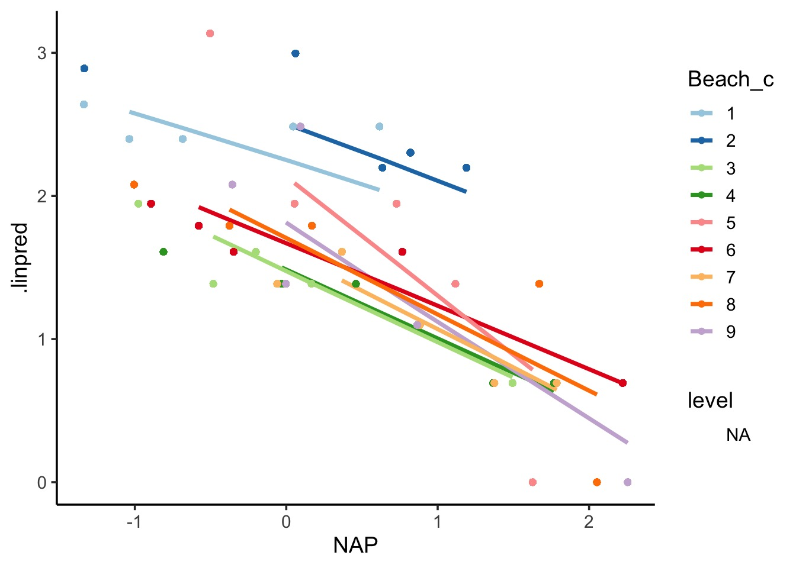
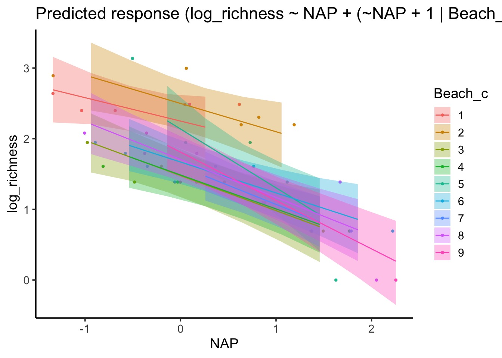

library(knitr)
library(rethinking)
library(cmdstanr)
opts_chunk$set(fig.height=5, fig.width=7, comment=NA,
warning=FALSE, message=FALSE,
dev="jpeg", root.dir = here::here())Comparing Bayesian Approaches
1. Intro
Well. Here we are at the end of the semester of working with Statistical Rethinking. And it’s time for you all to take flight on your own.
But, before you go, while the rethinking package has been amazing, we know it is but a scaffold to launch fully into the Bayesian world. McElreath has done amazing things to implement so many cool features (and/or deal with people like me who pester him). But, there are other packages out there with developers whose full lives (well, a good chunk of, anyway) revolve around Bayesian software development. Some of those are general use software packages. Some are designed with very specific use cases. You can find a great jumping off point at Awesome Bayes.
For today, I wanted to take a quick scan of some of the solutions that you might use, and provide a few resources here and there. We’re going to work together on a common example and see how it changes, packge by package. Again, this is but a start. I’m going to focus on a mixed model with a variable slope and intercept. Maybe I’ll write another version of this in the future with, say, a GLMM, a GAM, or Gaussian Process or something wilder. Or maybe other folk will see this, get inspired, and do the same. That would be nice. Because I have fieldwork to do (eyes wetsuit in the corner that’s too dry).
2. Let Start with a Simple Example - RIKZ
I’m a fan of the Beach data from RIKZ (Rijksinstituut voor Kust en Zee), i.e., the Dutch Institute for Coastal and Marine Management. Zuur uses it in his mixed models book. Feiberg uses it in his his book. It’s nice.
To remind you, we’re looking at species richness on nine beaches. One variable, NAP, is height of a sample relative to sea level. Low values = lower in the intertidal.
See. I had to get something field-work-y in here. I’m already dreaming of the lower intertidal mussel beds off of Lovells Island.
Because I don’t want to make this too crazy, let’s look at the relationship between tide height and log(x+1) of species richness. It’s pretty linear. Here it is with lm() fits. Note, I’m going to make a log_richness column. I’m also going to make a column where Beach (which is an integer) is a character, as for some packages that will matter later. I’ll let you know when.
library(ggplot2)
theme_set(theme_classic(base_size = 14))
library(Data4Ecologists)
library(dplyr)
data("RIKZdat")
# make a separate data frame for later use
d <- RIKZdat |>
mutate(log_richness = log(Richness+1),
Beach_c = as.character(Beach))
ggplot(d, aes(x = NAP, y = log_richness, color = Beach_c)) +
geom_point() +
stat_smooth(method = "lm", alpha = 0.1) +
scale_color_brewer(palette = "Paired")Cool! We can see the slopes and intercepts all vary a bit. There’s a general underlying trend, though. But some variation.
HEY LET’S DO A MIXED MODEL
If we were using, say, lme4, we’d code it up like so:
library(lme4)
library(broom.mixed)
rikz_lme4 <- lmer(log_richness ~ NAP +
(NAP + 1|Beach),
data = d)
tidy(rikz_lme4)# A tibble: 6 × 6
effect group term estimate std.error statistic
<chr> <chr> <chr> <dbl> <dbl> <dbl>
1 fixed <NA> (Intercept) 1.86 0.153 12.2
2 fixed <NA> NAP -0.528 0.102 -5.19
3 ran_pars Beach sd__(Intercept) 0.425 NA NA
4 ran_pars Beach cor__(Intercept).NAP -0.0657 NA NA
5 ran_pars Beach sd__NAP 0.254 NA NA
6 ran_pars Residual sd__Observation 0.331 NA NA We will hold onto that as a bit of a baseline for comparison as we move forward.
3. Rethinking RIKZ
At this point, we should all be pretty comfortable with rethinking. Let’s code it up with a variable slope-intercept model. We will use Beach as an index (it’s an integer 1-9). We will use multi_normal to specify our intercept and slope deviations from the grand mean.
For priors, let’s make slope and intercept pretty wide. Eyeballing the figure, log_richness goes from 0-4 and NAP from -1.4-2.3. OK, so intercept slope can be normal(2,2) and slope is normal(0,2). Too wide, likely, but, eh. We’ll set all sigmas to be exponential(2) and the correlation to lkj(1). We could make other choices, but this should do for now.
# Rethinking
library(rethinking)
rikz_rethinking <- ulam(
alist(
# Likelihood
log_richness ~ dnorm(mu, sigma),
# DGP
mu <- a + b*NAP + site_dev[Beach] + site_slope_dev[Beach] * NAP,
# RE
c(site_dev, site_slope_dev)[Beach] ~
multi_normal(c(0,0), Rho, sigma_beach ),
# Priors
a ~ dnorm(2, 2),
b ~ dnorm(0, 2),
Rho ~ dlkjcorr(1),
sigma ~ dexp(2),
sigma_beach ~ dexp(2)
),
data = d, chains = 3
)Results are pretty similar to above. As they should be.
tidy(rikz_lme4)# A tibble: 6 × 6
effect group term estimate std.error statistic
<chr> <chr> <chr> <dbl> <dbl> <dbl>
1 fixed <NA> (Intercept) 1.86 0.153 12.2
2 fixed <NA> NAP -0.528 0.102 -5.19
3 ran_pars Beach sd__(Intercept) 0.425 NA NA
4 ran_pars Beach cor__(Intercept).NAP -0.0657 NA NA
5 ran_pars Beach sd__NAP 0.254 NA NA
6 ran_pars Residual sd__Observation 0.331 NA NA rethink_coefs <- precis(rikz_rethinking, depth = 3,
pars = c("a", "b", "Rho[2,1]", "sigma", "sigma_beach"))
rethink_coefs mean sd 5.5% 94.5% rhat ess_bulk
a 1.84586597 0.16336447 1.58470225 2.1013168 1.014808 301.22237
b -0.53754385 0.11378226 -0.71007402 -0.3763989 1.015616 349.88723
Rho[2,1] 0.01973319 0.41465703 -0.62702861 0.6897833 1.002462 476.65837
sigma 0.36666623 0.05709385 0.28180081 0.4612161 1.002717 564.27630
sigma_beach[1] 0.45191866 0.15151914 0.26101168 0.7128389 1.001198 452.71827
sigma_beach[2] 0.23420553 0.14333865 0.03579547 0.4727332 1.044450 77.013964. stan
OK, time for the big kahuna first. There are a LOT of interfaces to stan that let you work in the stan language. We’ll use cmdstanr as it underlies rethinking and seems to be the latest hotness (and implements a bunch of new features). We can write our stan models in their own file, but in this case, let’s do it right here. We can use write_stan_file() to make a temporary file from a text string, so we’ll take advantage of that.
stan code consists of a few pieces to your model. Broadly, a stan model will look like this with ... being filled in with other stuff.
// comments look like this - note the //
data{
// you have to define all of your data here
...
}
transformed data{
// you can make transforms of your data here
// instead of in the data itself!
...
}
parameters{
// you have to define all of your parameters here
...
}
transformed parameters {
// if you have them, you can do transformation here!
// but, if it's just a generated quantity that you
// don't need to sample, do it later
...
}
model{
// expected value
// priors
// random effects or other intermediaries
// data generating process
// here be likelihoods at the end
}
generated quantities {
// executed after sampling
// so things that don't need to be used
// like likelihoods for WAIC, indirect effects, etc
...
}stan is persnickity about block order as well as, for the model, order within a block. That’s because everything is executed sequentially. Unlike rethinking models. So if you try and do something with a quantity that isn’t defined, you’re hosed. See here for more.
4.1 The data block and defining things
First in the model would be the data block. Here we define information about all inputs coming in from the data. stan does not know what each input is - what class, how much, etc. We have to tell it. This can be good, as it gives flexibility. Let’s say, for example, we were going to feed the following list to stan.
d_list <- list(
N = nrow(d),
N_Beaches = length(unique(d$Beach)),
NAP = d$NAP,
Beach = d$Beach,
log_richness = d$log_richness
)Here we have a single integer that is the total sample size N, a single integer that is the number of beaches, N_Beaches, the numeric vector NAP, the integer vector Beach, and the numeric vector log_richness
For the data block of code, we need to define each type. For vectors and arrays we need to specify how many elements there are. As stan is evaluated sequentially, this means we will have to specify N first, and then the others after.
log_richenss and NAP will be vectors. As we require Beach to be an integer, we need to put it in an array. As an array, we can specify the type of class is in the array - in this case, an integer. They can also have multiple dimensions. Vectors, in contrast, are one dimensional real numbers - not integers. This is important, as we’re going to use those integers later as indices.
Here, our data block looks like
data{
int<lower=0> N;
int<lower=0> N_Beaches;
vector[N] log_richness;
array[N] int Beach;
vector[N] NAP;
}While I’ve specified a lower bound on N and N_Beaches, that’s not necessary.
Note also that every line ends with a ;
4.2 Parameters
Next up, our parameters block. In this case, very similar in terms of syntax to our data block. I’m also going to use the same parameter names as in our rethinking model. The new thing here is a new data type, corr_matrix. This takes a single index, as it’s assumed to be a square symetric matrix with a diagonal of 1s and all values are constrained between -1 and 1.
Note here that we use N_Beaches for our random slope and intercept terms to specify the size of the parameter vectors.
parameters{
vector[N_Beaches] site_slope_dev;
vector[N_Beaches] site_dev;
corr_matrix[2] Rho;
real a;
real b;
real<lower=0> sigma;
vector<lower=0>[2] sigma_beach;
}4.3 Model
We don’t need any of the other code blocks for this example, so let’s hope into the model. In our model, we need to think about our code being evaluated sequentially. Hence, we have to remember to define things before we use them. This often means specifying priors first. Let’s take a look.
// priors FIRST
sigma_beach ~ exponential( 2 );
sigma ~ exponential( 2 );
b ~ normal( 0 , 2 );
a ~ normal( 2 , 2 );
Rho ~ lkj_corr( 1 );Hey! That looks pretty much JUST LIKE RETHINKING. Phew.
Next, let’s look at our random effects. Read this and drink it in, as a few things are going on here.
// RE SECOND
{
array[N_Beaches] vector[2] YY;
for ( j in 1:N_Beaches ) YY[j] = [ site_dev[j] , site_slope_dev[j] ]';
vector[2] MU;
MU = [ 0 , 0 ]';
YY ~ multi_normal( MU , quad_form_diag(Rho , sigma_beach) );
}First, note that this is in a block itself. It doesn’t have to be, but it can help to separate it out.
Second, notice that we are defining an array of random effects. The array has N_Beaches elements. BUT each element is a vector of length 2. One intercept and one slope. arrays are the lists of stan.
Then we have a for loop. A for loop?!?!?! Yes. In stan, when operate on one element at a time. As such, we have to iterate over vectors. It’s not automatic. Here we are iterating over the YY array. All N_Beaches elements. This is the same syntax as an R for loop. For each element, we specify a vector (notice using [] instead of () as in R) that consists of the intercept and slope for element j. Remember, we defined these in parameters and they are of length N_Beaches.
Next we have to build up to our multivariate normal distribution of the random effects. We need a vector of means - but they are always 0, as we’re using non-centered parameterization for the model. We can then specify the distribution of YY with multi_normal.
Here, quad_form_diag is a function from stan such that quad_form_diag(Sigma, tau) is equivalent to diag_matrix(tau) * Sigma * diag_matrix(tau) - it does the work of making a covariance matrix from our matrix of standard deviations, sigma_beach and our correlation matrix Rho.
That’s a lot, but, we can see the building of the RE step by step.
Next, our data generating process. Notice how we define mu first. And then iterate over each and every data point with a for loop.
// Data Generating Process THIRD
vector[N] mu;
for ( i in 1:N ) {
mu[i] = a + b * NAP[i] + site_dev[Beach[i]] + site_slope_dev[Beach[i]] * NAP[i];
}Take a moment to think through the indexing - particularly [Beach[i]] for the random effects. Think about it relative to your data.
Then, last, we can finally specify our likelihood, as every part of it has finally been defined.
log_richness ~ normal( mu , sigma );4.4 Executing the model
Now that we’ve done the work, we can put all of this together into one model using write_stan_file() to write our a temporary file, which we’ll save as f
# stan
library(cmdstanr)
f <- write_stan_file("
data{
int<lower=0> N;
int<lower=0> N_Beaches;
vector[N] log_richness;
array[N] int Beach;
vector[N] NAP;
}
parameters{
vector[N_Beaches] site_slope_dev;
vector[N_Beaches] site_dev;
corr_matrix[2] Rho;
real a;
real b;
real<lower=0> sigma;
vector<lower=0>[2] sigma_beach;
}
model{
// priors FIRST
sigma_beach ~ exponential( 2 );
sigma ~ exponential( 2 );
b ~ normal( 0 , 2 );
a ~ normal( 2 , 2 );
Rho ~ lkj_corr( 1 );
// RE SECOND
{
array[N_Beaches] vector[2] YY;
for ( j in 1:N_Beaches ) YY[j] = [ site_dev[j] , site_slope_dev[j] ]';
vector[2] MU;
MU = [ 0 , 0 ]';
YY ~ multi_normal( MU , quad_form_diag(Rho , sigma_beach) );
}
// Data Generating Process THIRD
vector[N] mu;
for ( i in 1:N ) {
mu[i] = a + b * NAP[i] + site_dev[Beach[i]] + site_slope_dev[Beach[i]] * NAP[i];
}
// Likelihood LAST
log_richness ~ normal( mu , sigma );
}
")We then use cmdstan_model() to compile it.
# compile
rikz_stan_mod <- cmdstan_model(f)rikz_stan_mod is an object full of functions. Try rikz_stan_mod$print() for example. Or
rikz_stan_mod$check_syntax()Each function has a help file. Finally, we can use rikz_stan_mod$sample() to actually run the model, much like we do with ulam.
rikz_stan <- rikz_stan_mod$sample(
data = d_list,
chains = 3,
parallel_chains = 3,
refresh = 500 # print update every 500 iters
)What’s great about this is that bayesplot and tidybayes both work very well with stan objects. If we want to get some basics, though and compare it to our rethinking fit.
rethink_coefs mean sd 5.5% 94.5% rhat ess_bulk
a 1.84586597 0.16336447 1.58470225 2.1013168 1.014808 301.22237
b -0.53754385 0.11378226 -0.71007402 -0.3763989 1.015616 349.88723
Rho[2,1] 0.01973319 0.41465703 -0.62702861 0.6897833 1.002462 476.65837
sigma 0.36666623 0.05709385 0.28180081 0.4612161 1.002717 564.27630
sigma_beach[1] 0.45191866 0.15151914 0.26101168 0.7128389 1.001198 452.71827
sigma_beach[2] 0.23420553 0.14333865 0.03579547 0.4727332 1.044450 77.01396rikz_stan$summary(variables = c("a", "b", "sigma", "sigma_beach"))# A tibble: 5 × 10
variable mean median sd mad q5 q95 rhat ess_bulk ess_tail
<chr> <dbl> <dbl> <dbl> <dbl> <dbl> <dbl> <dbl> <dbl> <dbl>
1 a 1.84 1.84 0.189 0.165 1.53 2.14 1.01 486. 578.
2 b -0.523 -0.519 0.117 0.0973 -0.708 -0.339 1.00 804. 800.
3 sigma 0.366 0.360 0.0569 0.0610 0.283 0.464 1.01 405. 1353.
4 sigma_beac… 0.467 0.435 0.154 0.125 0.271 0.763 1.00 894. 1510.
5 sigma_beac… 0.236 0.225 0.138 0.131 0.0383 0.479 1.01 180. 138.Maybe some rounding error here and there, but, matches. (and it should, as I modified the stan code from the stan code generated by the rethinking model.)
5. brms
Some of you might be familiar with brms via Solmon Kurz’s excellent guide to recoding rethinking with brms and the tidyverse. Its incredibly useful, and where I first learned about tidybayes
(btw: Solmon, brm’s author Paul Bürkner and tidybayes’s Matt Kay are all folk worth looking up and following on their socials for hawt bayes content)
brms is great as it takes a syntax similar to lme4 and glmmTMB and uses it to address Bayesian models. And the package expands all the time to accomodate more and more insane cases. The model itself we’ll be able to understand in a snap, so let’s look at priors.
First off, if you hit up ?prior, you will see the delicious and readable detail of brms in its full form. It’s very thorough. Every parameter can have a prior object that we then put into a vector. Each and every prior takes a distribution, and then you can specify it’s class (b for coefficients, sd for standard deviations of different types, cor for correlation matrices). Within those classes, you can also specify a specific coef that the prior will be used for.
If you are ever unsure what falls where, you can also use get_prior to see the default settings and coefficient names
library(brms)
get_prior(log_richness ~ NAP +
(NAP + 1|Beach_c),
prior = rikz_prior,
data = d) prior class coef group resp dpar nlpar lb ub
(flat) b
(flat) b NAP
lkj(1) cor
lkj(1) cor Beach_c
student_t(3, 1.6, 2.5) Intercept
student_t(3, 0, 2.5) sd 0
student_t(3, 0, 2.5) sd Beach_c 0
student_t(3, 0, 2.5) sd Intercept Beach_c 0
student_t(3, 0, 2.5) sd NAP Beach_c 0
student_t(3, 0, 2.5) sigma 0
source
default
(vectorized)
default
(vectorized)
default
default
(vectorized)
(vectorized)
(vectorized)
defaultFor our purposes, we’re going to set a vector of priors matching what we’ve done above.
library(brms)
rikz_prior <- c(prior(normal(2,2), class = "Intercept"), # handles intercept
prior(normal(0,2), class = "b", coef = "NAP"), # handles intercept
prior(exponential(2), class = "sd", group = "Beach_c"),
prior(exponential(2), class = "sd"),
prior(lkj(1), class = "cor")
)With this created, we can just use our priors as the value for the prior argument in brm. Note, the only funky think I’d going here is using Beach_c, as it will play better with modelbased later on.
rikz_brms <- brm(log_richness ~ NAP +
(NAP + 1|Beach_c),
prior = rikz_prior,
data = d,
chains = 3)One thing that’s nice about brms is that it works with performance via bayesplot. For example
performance::check_model(rikz_brms)
We can also use other diagnostics, such as PIT plots and more! Check out ?pp_check
plot(rikz_brms)

pp_check(rikz_brms, ndraws = 100)
pp_check(rikz_brms, type = "error_hist", ndraws = 11)pp_check(rikz_brms, type = "scatter_avg", ndraws = 100)pp_check(rikz_brms, type = "stat_2d")
pp_check(rikz_brms, type = "loo_pit_qq")pp_check(rikz_brms, type = "loo_pit_overlay")
So, how does this compare to rethinking??
# compare
rethink_coefs mean sd 5.5% 94.5% rhat ess_bulk
a 1.84586597 0.16336447 1.58470225 2.1013168 1.014808 301.22237
b -0.53754385 0.11378226 -0.71007402 -0.3763989 1.015616 349.88723
Rho[2,1] 0.01973319 0.41465703 -0.62702861 0.6897833 1.002462 476.65837
sigma 0.36666623 0.05709385 0.28180081 0.4612161 1.002717 564.27630
sigma_beach[1] 0.45191866 0.15151914 0.26101168 0.7128389 1.001198 452.71827
sigma_beach[2] 0.23420553 0.14333865 0.03579547 0.4727332 1.044450 77.01396tidy(rikz_brms)[,-c(1:2)]# A tibble: 6 × 6
group term estimate std.error conf.low conf.high
<chr> <chr> <dbl> <dbl> <dbl> <dbl>
1 <NA> (Intercept) 1.86 0.169 1.53 2.21
2 <NA> NAP -0.523 0.105 -0.730 -0.293
3 Beach_c sd__(Intercept) 0.454 0.144 0.231 0.790
4 Beach_c sd__NAP 0.235 0.134 0.0175 0.533
5 Beach_c cor__(Intercept).NAP 0.0144 0.434 -0.777 0.823
6 Residual sd__Observation 0.371 0.0595 0.273 0.499Again, rounding error.
Last, what if we want to see how things worked out in terms of fit? There are two options. It is almost trivial to use tidybayes here.
library(tidybayes)
rikz_brms_predict <- linpred_draws(rikz_brms, newdata = d)
ggplot(rikz_brms_predict,
aes(x = NAP)) +
stat_lineribbon(aes(y = .linpred), alpha = 0.5) +
geom_point(aes(y = log_richness)) +
facet_wrap(vars(Beach_c))
# Or
ggplot(rikz_brms_predict,
aes(x = NAP, color = Beach_c)) +
stat_lineribbon(aes(y = .linpred), .width = NA) +
geom_point(aes(y = log_richness)) +
scale_color_brewer(palette = "Paired")
Or you can use modelbased to see both fixed and random effects.
modelbased::estimate_relation(rikz_brms) |> plot()modelbased::estimate_relation(rikz_brms,
include_random = TRUE) |> plot()
There’s a big community here, and one well worth diving in for models that aren’t super-complex.
6. inla
inla is a really interesting package that rose up to work with spatial and spatiotemporal data using laplacian approximation. The key insight of Laplacian approximation is that underlying each element of a model are latent gaussian variables. Think the random effects themselves. Once we have that at the core, there are algorithmic solutions that, while not always as precise as HMC, work very well and very fast for very complex models.
inla has a lot of non-standard dependencies, so you’ll need to istall it from the inla repo.
install.packages("INLA",
repos=c(getOption("repos"),
INLA="https://inla.r-inla-download.org/R/stable"),
dep=TRUE)There are some great bookdowns out there about inla as well as tutorials, and you will need them. inla eschews the standard syntax of lme4, brms, and others and kinda has its own thing. While the speed is nice, I find it hard to work with, personally, and the documentation obtuse. But, let’s look at this model. We’ll start without priors.
First off, for REs and, really, most things other than a regression coefficient, inla uses the f() function inside it’s models. This is kinda like mgcv and how it uses s() for splines. But, a little different. In each one, you have to specify what model this underlying latent model this parameter is coming from. For a random intercept, for example, our rando intercepts are assumed to be independent and identically distributed, so we’ll use the iid model.
Also, Beach has to be an integer to keep track of indices.
library(INLA)
rikz_inla_int <- inla(log_richness ~ NAP +
f(Beach, model="iid"),
data = d)Now, it would be nice if we could just add NAP to that somehow. But, inla doesn’t want us to have it nice or straightforward. Instead, we have to do some bookkeeping. In our new model, we will need to
Spcify that the model the intercept is part of is
iid2d- because there will be two random effects and they will be correlated.We will also need to say how parameters will be estimated In this case, as Beach is an index, we can just use the maximum index value and multiply it by 2 (9 intercepts, 9 slopes).
Then, we need a new variable to specify the indices for our slopes. These indices cannot be the same as those for the intercept, but have to come after those. So, we’ll mutate on the fly to create a new variable, Beach1 which is just the old indices plus the max of the old indices. So, 10:18 in this case.
For the slope, we use the construction
Beach1, NAPwhich isGrouping Index, Covariate.We also want to copy all the info on the model, n, etc. from our random intercept call. So we use
copy = Beach.
here’s what that all looks like
rikz_inla <- inla(log_richness ~ NAP +
f(Beach,
model="iid2d",
n = 2*max(d$Beach))+
+ f(Beach1, NAP,
copy = "Beach"),
data = d |> mutate(Beach1 = Beach + max(Beach)))6.1 Priors in inla
Priors in inla are a hair harder to implement. Each f() has a hyper argument where you can specify priors. For fixed effects, we need to wrap them in a f() function where model = "linear". Right now…. they don’t seem to take hyperparameters? See inla.models()$latent$linear$hyper or ?inla.models
Anyone have any advice on linear terms, I’d love to hear it!
For the random effects, it’s a bit more straightforard. They take priors for their error terms - theta. But - it’s not a prior on a sd. It’s a prior in a precision, or prec, term. Precision = 1/variance. So, you’ll have to wrap your brain around it a bit more. And so do I, in order to translate, say, an exponential prior on a standard deviation to a precision or log precision. So I’m going to walk away until someone smarter weighs in.
6.2 Comparing inla and rethinking fits
As you can see, I’m not deep in the inla world, so don’t have a lot of experience with the diagnostics we need. BUT - we can look compare fits. Even without priors for the moment.
First, run this function which will make better output.
tidy.inla <- function(x){
# x = model_inla
term_names <- rownames(x$summary.fixed)
re_term_names <- rownames(x$summary.hyperpar)
tibble::as_tibble(bind_rows(x$summary.fixed, x$summary.hyperpar)) %>%
dplyr::mutate(terms = c(term_names, re_term_names)) %>%
dplyr::select(terms,
dplyr::everything())
}Then
rethink_coefs mean sd 5.5% 94.5% rhat ess_bulk
a 1.84586597 0.16336447 1.58470225 2.1013168 1.014808 301.22237
b -0.53754385 0.11378226 -0.71007402 -0.3763989 1.015616 349.88723
Rho[2,1] 0.01973319 0.41465703 -0.62702861 0.6897833 1.002462 476.65837
sigma 0.36666623 0.05709385 0.28180081 0.4612161 1.002717 564.27630
sigma_beach[1] 0.45191866 0.15151914 0.26101168 0.7128389 1.001198 452.71827
sigma_beach[2] 0.23420553 0.14333865 0.03579547 0.4727332 1.044450 77.01396tidy(rikz_inla)# A tibble: 6 × 8
terms mean sd `0.025quant` `0.5quant` `0.975quant` mode kld
<chr> <dbl> <dbl> <dbl> <dbl> <dbl> <dbl> <dbl>
1 (Intercep… 1.87 0.181 1.51 1.87 2.24 1.87 1.68e-7
2 NAP -0.527 0.153 -0.831 -0.526 -0.223 -0.526 1.46e-7
3 Precision… 10.5 2.77 5.98 10.2 16.8 9.62 NA
4 Precision… 4.93 2.23 1.88 4.51 10.5 3.75 NA
5 Precision… 7.32 3.35 2.78 6.67 15.7 5.52 NA
6 Rho1:2 fo… -0.0493 0.303 -0.616 -0.0521 0.533 -0.0525 NA Slope and NAP not far off. To understand other terms, you can calculate sqrt(1/prec) to compare back.
7. tmbstan
Last, but not least as it is still growing, there is a package out there that compiles TMB models into executable stan code. It doesn’t write stan models, just compiles into the c-based executable and then samples using stan.
What’s great about this is that at the same time, Ben Bolker has been working priors into glmmTMB for purposes of stability. We can put the two together, and then create a model that will run in stan using glmmTMB, if you so desire.
The prior system is not well documented yet, and doesn’t seem to have an exponential? Also, instead of sd, we use theta. Here, let’s create priors for both our slopes and intercepts and then for our sd terms. I’m currently unclear on how to set a prior for the correlation term.
# glmmTMB and tmbstan
library(glmmTMB)
library(tmbstan)
cprior <- data.frame(prior = c("normal(2,2)", "normal(0,2)"),
class = rep("beta", 2),
coef = c("(Intercept)", ""))
sprior <- data.frame(prior = c("cauchy(0, 2)"),
class = c("theta"))With this, we can fit a standard glmmTMB model with a prior argument.
rikz_glmmTMB <- glmmTMB(log_richness ~ NAP +
(NAP + 1|Beach),
prior = cprior,
data = d)Inside of that fit object, the $obj part is a Template Model Builder object.. We can then feed this to tmbstan().
rikz_tmbstan <- tmbstan(rikz_glmmTMB$obj,
chains = 3,
iter = 2000)This takes a while, indicating to me that the code is not quite as optimized.
There is a tidier here we can use to compare
rethink_coefs mean sd 5.5% 94.5% rhat ess_bulk
a 1.84586597 0.16336447 1.58470225 2.1013168 1.014808 301.22237
b -0.53754385 0.11378226 -0.71007402 -0.3763989 1.015616 349.88723
Rho[2,1] 0.01973319 0.41465703 -0.62702861 0.6897833 1.002462 476.65837
sigma 0.36666623 0.05709385 0.28180081 0.4612161 1.002717 564.27630
sigma_beach[1] 0.45191866 0.15151914 0.26101168 0.7128389 1.001198 452.71827
sigma_beach[2] 0.23420553 0.14333865 0.03579547 0.4727332 1.044450 77.01396tidy(rikz_tmbstan)[-c(3:21),]# A tibble: 5 × 3
term estimate std.error
<chr> <dbl> <dbl>
1 beta[1] 1.82 0.143
2 beta[2] -0.538 0.0705
3 theta[1] -0.936 0.322
4 theta[2] -3.09 0.968
5 theta[3] -14.8 664. slopes look good. I need to have a think about the other coefficients, as a negative theta seems odd. But hopefully better documentation will come our way on doing something wild like this, and I’ll incorporate it here.
More work eneded, as we can see that theta is not mixing well with this model version.
traceplot(rikz_tmbstan, pars = c("beta", "theta"))